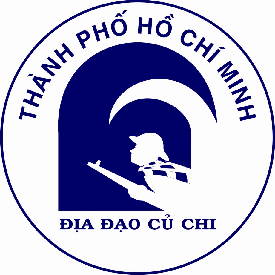

Đã diễn ra
Đã diễn ra
Địa Đạo Củ Chi : Trăng Chiến Khu
Giá từ 399.000đ
🗓️ 24 tháng 04, 2026
📍
Địa đạo Củ Chi
Ấp Phú Hiệp, xã Phú Mỹ Hưng, Huyện Củ Chi, Thành phố Hồ Chí Minh
▼ Click để xem Giới thiệu đầy đủ, Lịch diễn & BTC ▼
Đã diễn ra
Địa Đạo Củ Chi : Trăng Chiến Khu
Giá từ 399.000đ
Giới thiệu sự kiện
CHƯƠNG TRÌNH BIỂU DIỄN VÀO BAN ĐÊM "TRĂNG CHIẾN KHU"
Nhằm đưa ra sản phẩm mới để thu hút và đáp ứng nhu cầu thăm quan ngày càng cao của du khách khi đến Khu di tích lịch sử địa đạo Củ Chi. Đồng thời giúp cho du khách hiểu được cuộc sống, sinh hoạt về đêm với khí thế cùng với sự lạc quan, tin tưởng, hăng hái tham gia phong trào cách mạng của người dân Củ Chi sống trong Vùng Giải phóng giai đoạn 1961 – 1964, đây là giai đoạn sau Đồng Khởi 1960, Mỹ ngụy tiến hành chiến lược “chiến tranh đặc biệt” đánh phá rất ác liệt do quân ngụy trực tiếp tác chiến với lực lượng cách mạng, còn quân Mỹ làm cố vấn. Qua đó góp phần giáo dục lòng yêu nước cho các thế hệ trẻ Việt Nam.
Chương trình tour thăm quan lấy ánh trăng làm chủ đạo, tái hiện lại cuộc sống, sinh hoạt về đêm của người dân Củ Chi sống trong vùng giải phóng với những hoạt động như: cảnh người dân tham gia đào địa đạo, đan lát dưới ánh trăng, cảnh thanh niên đăng ký tòng quân đánh giặc, xay lúa, giã gạo, trai gái hò đối đáp nhau trên đồng ruộng, họp chợ, cảnh văn công về biểu diễn phục vụ bộ đội, du kích và người dân hòa lẫn với tiếng bom, tiếng pháo, tiếng máy bay địch tuần tiễu... sẽ đưa du khách quay trở lại và hòa nhập vào cuộc sống của làng quê Củ Chi giai đoạn từ 1961 – 1964, hứa hẹn sẽ có những giây phút hồi hộp và những cảm nhận khó quên khi tham gia chương trình.
Chương trình được diễn ra từ 18h00 đến 20h30.
Khi tham gia xuất diễn du khách sẽ được nhận một món quà tặng hấp dẫn gắn liền với du kích Củ Chi.!
Lịch diễn & Vé
18:00 - 20:30, Thứ Sáu
24 Tháng 04, 2026
Ban tổ chức

KHU DI TÍCH LỊCH SỬ ĐỊA ĐẠO CỦ CHI
Giờ mở cửa: 7:00 - 17:00
LƯU Ý
• Vui lòng có mặt đúng giờ để tham gia trọn vẹn hành trình trải nghiệm đêm (18:00).
• Khán giả sẽ nhận được quà tặng lưu niệm đặc trưng của du kích Củ Chi khi tham gia.
• Chương trình tái hiện lịch sử hào hùng, vui lòng tuân thủ các quy định tham quan tại di tích.